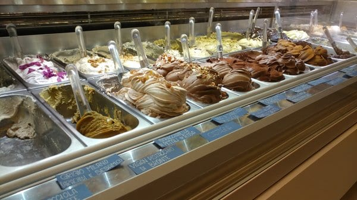
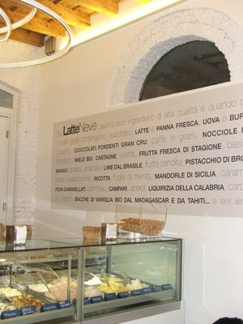
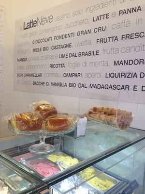
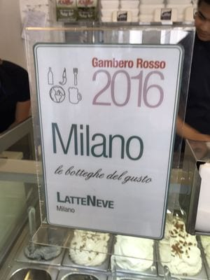
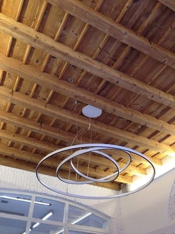
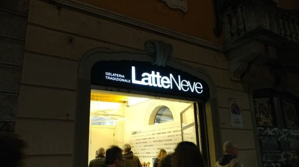

Gelateria tradizionale · Via Vigevano 27 — Porta Genova, Milano
LatteNeve
Il gelato come si faceva una volta, a due passi dalla Darsena: pistacchio di Bronte, granite siciliane e una parete che dichiara ogni ingrediente, uno per uno.
Segnalata dal Gambero Rosso — “Milano, le botteghe del gusto”
Il banco
Vaschette basse, gusti che cambiano, e il pistacchio che arriva da Bronte — non “tipo Bronte”.
LatteNeve è una gelateria tradizionale di via Vigevano, la strada che porta dalla Darsena a Porta Genova. Niente montagne fluorescenti in vetrina: gelato mantecato come si deve, granite siciliane d’estate e brioches per chi fa colazione col gelato senza sensi di colpa.
Chi ha esigenze non resta a guardare: ci sono gusti vegani — nocciola, pistacchio, cioccolato, i sorbetti di frutta, il gelato di cocco — e opzioni senza glutine e senza lattosio. Basta chiedere al banco.
Gli ingredienti, dichiarati al muro
In gelateria c’è una parete intera che elenca cosa finisce nelle vaschette. Non è arredamento: è una dichiarazione. Questi sono alcuni, copiati da lì:
- Cioccolati fondenti gran cru
- Bacche di vaniglia bio dal Madagascar e da Tahiti
- Pistacchio di Bronte
- Mandorle di Sicilia
- Liquirizia della Calabria
- Frutta fresca di stagione
- Latte e panna fresca
- Miele bio e castagne
Gambero Rosso l’ha messa tra “le botteghe del gusto” di Milano. La targa è al banco, di fianco alle brioches.
La gelateria






Foto dalle recensioni pubbliche della gelateria.
Orari e dove
| Tutti i giorni | 12:00 – 23:00 |
|---|
Nei mesi freddi gli orari possono variare: per sicurezza, una telefonata.